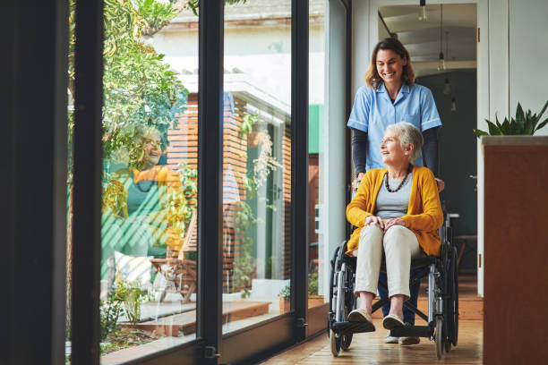
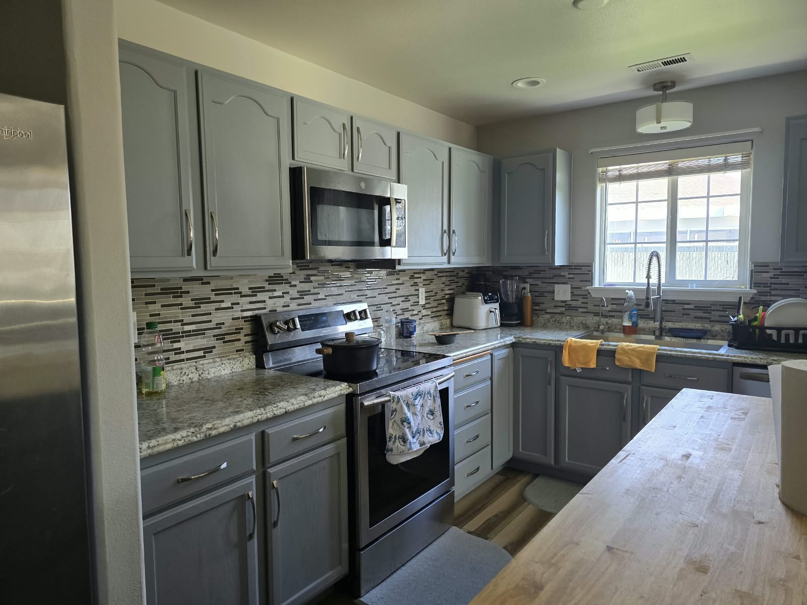

Every resident is different. Our care approach focuses on safety, dignity, comfort and individualized day-to-day support.
Instead of repeating one layout, each service below has its own presentation, its own photo and its own explanation so visitors can understand the difference more easily.
We provide respectful support for residents who benefit from structure, supervision and personalized daily routines in a calm home environment.
Our dementia support focuses on reassurance, a familiar routine and a comfortable home atmosphere that helps residents feel safe and valued.
We offer a steady, home-like setting where residents can receive supportive care in an environment centered on emotional well-being, respect and stability.
Ideal for residents who need a quieter environment, encouragement with daily living and compassionate support that recognizes their individuality.
Learn More About Mental Health Support →
We help residents with everyday personal and household needs while still encouraging choice, participation and as much independence as possible.
We can help you understand what kind of support may be most suitable for your loved one. Contact SAVENS and we will guide you through the available care options.